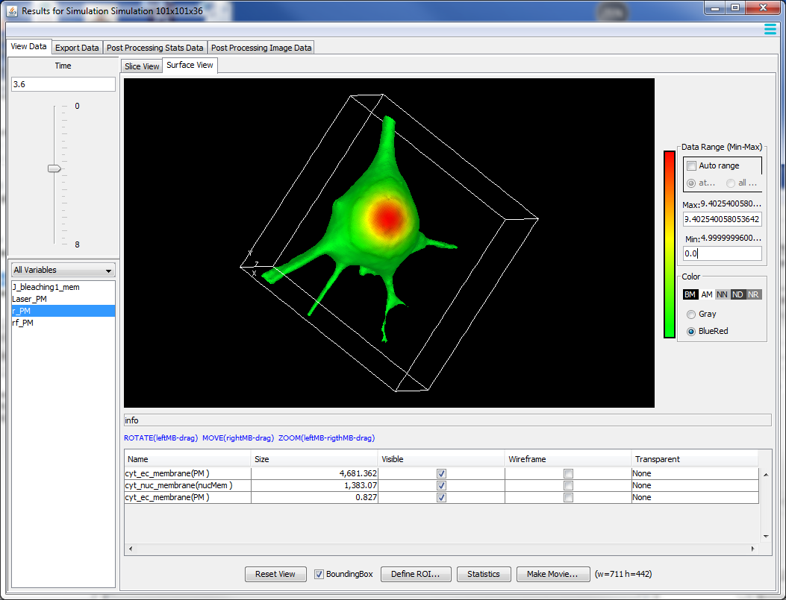
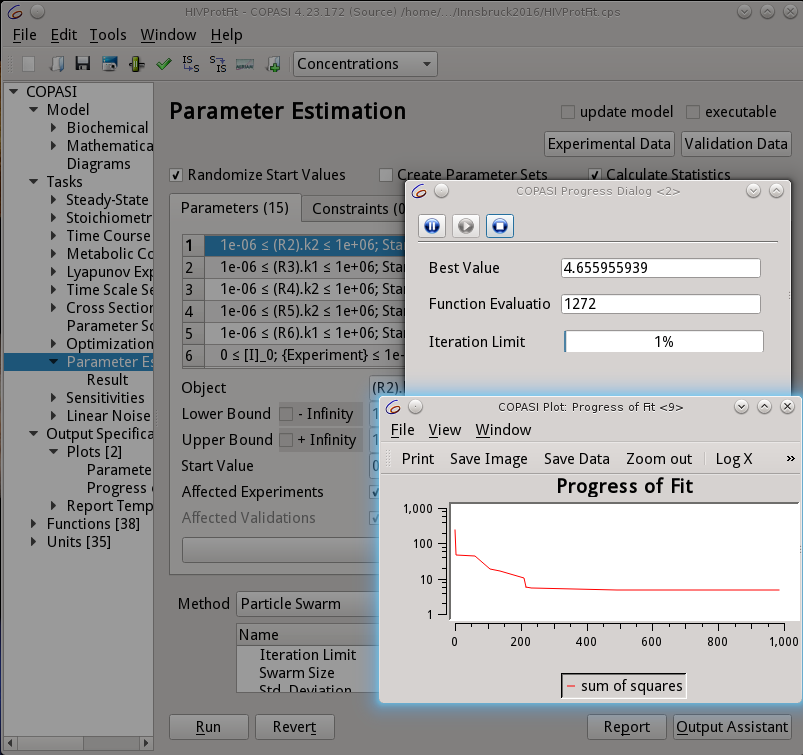
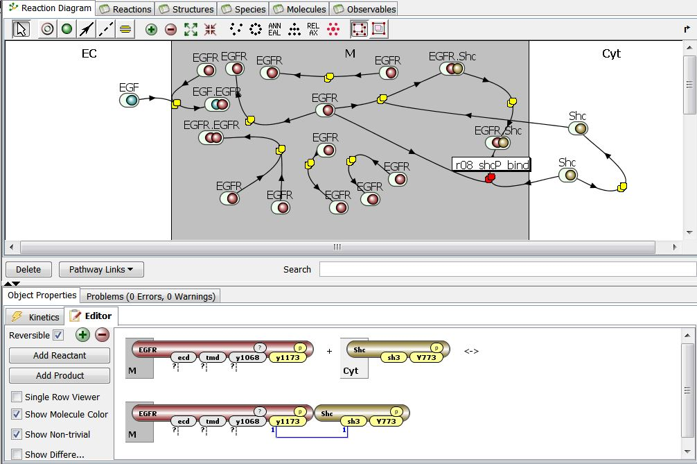

About
An intense online, designed to help cell biologists and biophysicists to develop mathematical models of their experimental system. We will teach how to use VCell (https://vcell.org/), COPASI (https://copasi.org/ ) and SpringSalad (https://vcell.org/ssalad) software to develop spatial and non-spatial models using deterministic, stochastic, agent- and rule-based approaches. Please check the websites for extensive tutorials and examples of models. Organized by the Center for Cell Analysis and Modeling (CCAM) at the University of Connecticut School of Medicine (UConn Health).Course Description
The course includes introductions to VCell, COPASI, and SpringSaLaD, presented by their developers and by modelers, followed by interactive hands-on sessions on designing your models, running simulations, and analyzing results. The number of course participants will be limited to allow for extensive one-on-one interactions with instructors and scientific disucssions among the participants. Instructors: Michael Blinov, Ann Cowan, Stefan Hoops, Leslie Loew, Pedro Mendes, Ion Moraru, Jim Schaff, and Boris Slepchenko.


How to Apply for the Course
Please email the following information to Dr. Michael Blinov blinov@uchc.edu, by June 30, 2024: your name, institution, lab head (if you are a student), and 1-2 page proposal outlining your research project and explaining how you feel VCell, COPASI, and/or SpringSaLaD will help it. This information will allow us to determine if our software is applicable to your project. As a NIH Biomedical Technology Resource, we are charged with supporting NIH-funded research through collaborative projects.Additional Information
Registration is free and we will provide all meals. However, you will be responsible for travel and hotel costs. Limited travel funds are available to promote diversity, and we especially encourage individuals from minority-serving institutions to apply for funding.Contact:
Tiffany Jespersen 860-679-6103 jespersen@uchc.edu
